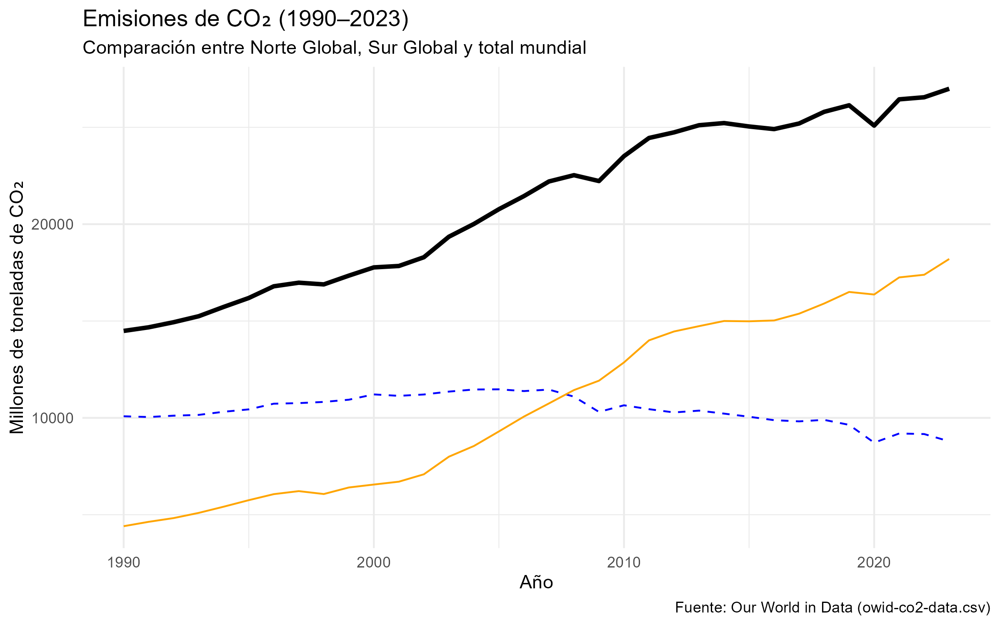
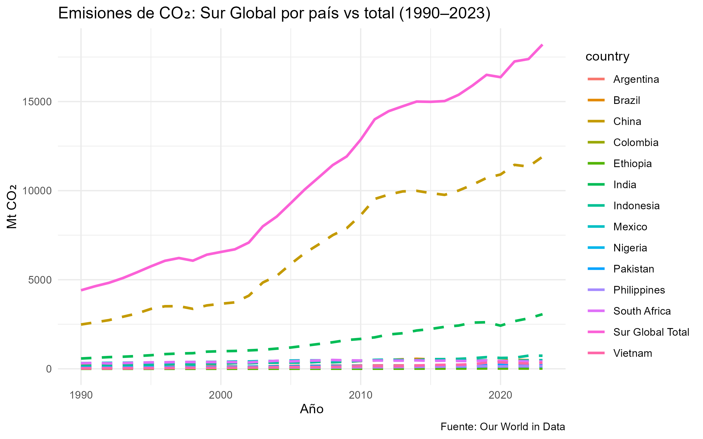
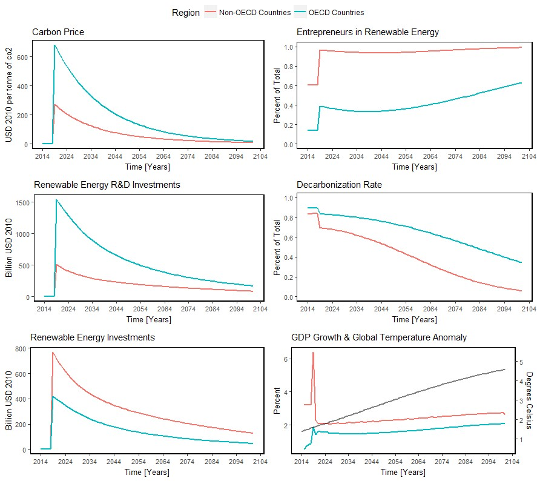
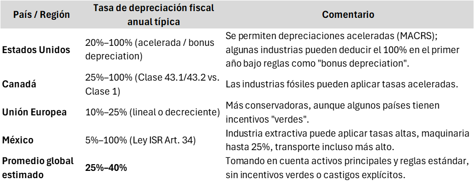

La Culpa Climática; Analizando las Fugas de Carbono ¿Del impuesto al castigo fiscal?
Como habitante del Sur Global, considero necesario cuestionar las atribuciones monocausales que responsabilizan a esta región como el principal actor en la degradación ambiental global, enunciando asimetrias, diversidad de mecanismos transnacionales y heterogeneidad estructural contenidas dentro del fenómeno de las fugas de carbono, como las principales motivaciones para generar el siguiente desarrollo teorico… la depreciación como herramienta climática
Definición
Podemos definir a las fugas de carbono (o carbon leakage, en inglés) como un fenómeno que ocurre cuando las políticas climáticas más estrictas en un país o región reorientan la producción de ciertas industrias a países con regulaciones menos ambiciosas. Afectando directa o indirectamente, dado que un aumento de las emisiones de gases de efecto invernadero en países con menos regulaciones compensan parcial o totalmente los esfuerzos de reducción de emisiones en países con regulaciones más ambiciosas o estrictas.
Causas
Para entender este fenómeno es importante definir las principales causas de las fugas de carbono:
- Impuestos al carbono
- Limites de emisiones
- Estándares tecnológicos ambiciosos
Estas causas generan incrementos de costos de producción hacia las industrias intensivas en emisiones como podría ser el: Acero, cemento, químicos, etc. Lo cual incentiva en términos económicos la relocalización de los procesos productivos.
Efectos
Con la finalidad de mitigar estos incrementos en costos de producción, las empresas utilizan mecanismos que les permiten mantener tanto su productividad como su rentabilidad, dentro de estos mecanismos, podemos identificar los siguientes:
- Relocalización Industrial: Las Empresas trasladan su producción a países con regulaciones más laxas para evitar costos regulatorios.
- Aumento de emisiones externas: La producción desplazada suele ser más contaminante, derivado del uso de energías más baratas pero sucias, como carbón o tecnologías menos eficientes.
- Efecto de mercado: Reducción de demanda de combustibles fósiles en el país regulado abarata su precio global, incentivando mayor consumo en otros lugares.
Como consecuencia de este fenómeno, se observa que las emisiones a nivel global no disminuyen (o podrían aumentar incluso), ya que las reducciones quedan compensadas entre países con regulaciones más ambiciosas y países con un menor grado de regulación. Por lo tanto, es importante considerar que vivimos en una economía abierta, de libre mercado y flujo de capital, en donde las restricciones regulatorias en un país pueden ser compensadas en países con menor ambición regulatoria. Es decir, nos enfrentamos a una realidad mucho más compleja que la economía de Robinson Crusoe: no se trata de decisiones aisladas, sino de sistemas interdependientes.
Es importante comprender que los efectos de las externalidades ambientales no respetan fronteras, mientras que los esfuerzos económico-ambientales si pueden ser heterogéneos, mientras que el comercio internacional fomenta la interdependencia de los mercados. Por ello, me parece fundamental estudiar el fenómeno de la fuga de carbono con la finalidad de equilibrar tanto la competitividad económica como la estabilidad ambiental y buscar un punto de política climática en común.
Pero antes de continuar, vale la pena preguntarnos sobre la pertinencia de estudiar este fenómeno ¿Hay evidencia actual de este fenómeno? ¿Es un fenómeno que la política pública a nivel global ha logrado resolver? ¿Qué impacto genera este fenómeno a nivel global?
Evidencia
Remitámonos a los datos para resolver esta inquietud, definamos al norte y sur global en primera instancia:
- Norte global: United States, Canada, Germany, France, United Kingdom, Italy, Spain, Japan, Australia, New Zealand, Norway, Sweden, Finland, Denmark, Belgium.
- Sur global: China, India, Brazil, Mexico, Indonesia, South Africa, Nigeria, Argentina, Colombia, Pakistan, Philippines, Vietnam, Ethiopia.
De acuerdo con la definición de Norte y Sur global, considerando datos de Our World in Data, podemos observar en el Gráfico 1, el comportamiento Global de las emisiones de CO₂ con la línea negra, el comportamiento de las emisiones del Norte Global con la línea azul punteada y en la línea naranja el comportamiento del Sur Global. Se pueden observar que existe una alta correlación entre el comportamiento Global (línea negra) y el comportamiento del Sur Global (línea naranja), mientras que el Norte Global muestra una tendencia moderada a la baja, como explicación de un fenómeno de fuga de carbono. Podemos presumir descriptivamente que hay una alta causalidad del Sur Global al comportamiento de las emisiones Globales. O bien indicar que el crecimiento o reducción de las emisiones globales de CO₂ está siendo impulsado principalmente por el Sur Global.
Un importante hallazgo para continuar con el análisis regulatorio con una evidencia de la existencia de las fugas de carbono.
Gráfico 1

Pero no podemos utilizar esto como un análisis determinístico, analicemos el fenómeno dentro del Sur Global.
Gráfico 2

Como podemos observar el Sur Global no es un bloque homogéneo, con lo cual no podemos presumir una causalidad directa. La heterogeneidad entre los países, niveles de desarrollo y políticas internas que influyen en las emisiones, agudizan la lectura crítica del fenómeno dentro del Sur Global, diferenciando lo fenoménico (ilusión de la causa directa) de lo fenomenológico (estructuras que ayuden a explicar la heterogeneidad). Es claro dentro del Sur Global la influencia en la aportación de emisiones de CO₂, con China e India como los principales actores.
Y más aún, desarticulando lo fenoménico, es importante mencionar la influencia de las zonas económicas especiales mediante exenciones fiscales y sus aportaciones a la emisión de contaminantes, la competencia regulatoria que relaja estándares ambientales, los acuerdos comerciales que obligan a países a importar combustibles fósiles, los subsidios a combustibles y el financiamiento al desarrollo vía extractivismo de combustibles fósiles, además de patrones coloniales como el mercado de los commodities, como fenómenos no exclusivos de la interdependencia Norte-Sur global, sino también relaciones Norte-Norte y Sur-Sur. Que podrían ser derivaciones de este análisis o posibles líneas de investigación.
Casos
Es importante en este punto, enunciar algunos ejemplos donde se materializa este fenómeno abordados en otras investigaciones.
Relocalización de la industria del aluminio de la UE a Islandia Tras las políticas climáticas de la UE, empresas como Alcoa trasladaron producción a Islandia, donde usan energía geotérmica (limpia), pero también a China y Rusia, donde dependen de carbón (Bakhtiari, 2020).
Desplazamiento de fábricas de acero de Alemania a Turquía El sistema de comercio de emisiones (ETS) de la UE aumentó costos, llevando a empresas como Thyssenkrupp a expandirse en Turquía, donde las emisiones por tonelada de acero son un 40% mayores (Branger et al., 2016).
Industria textil de China a Bangladesh y Vietnam Políticas ambientales en China desplazaron textiles a Bangladesh, donde el 80% de la energía industrial viene de carbón (IEA, 2021).
Producción de cemento en la UE vs. Marruecos La empresa LafargeHolcim cerró plantas en Francia y las reubicó en Marruecos, donde las emisiones por cemento son un 25% mayores (Neuhoff et al., 2014).
Maquiladoras en México con energía sucia para exportar a EE.UU. El T-MEC incentivó fábricas en México que usan diésel (no sujeto a impuestos al carbono), aumentando emisiones (Gallagher & Porzecanski, 2010).
Plantas químicas de EE.UU. a Arabia Saudita Empresas como Dow Chemical trasladaron producción a Arabia Saudita, donde el gas natural no tiene restricciones (Erickson et al., 2015).
Industria papelera de Suecia a Brasil Stora Enso movió producción a Brasil, donde la celulosa se produce con carbón (en lugar de hidroelectricidad sueca) (Ponssard & Walker, 2008).
Producción de fertilizantes en Países Bajos vs. Rusia Yara International redujo producción en Países Bajos (por altos costos de CO₂) y la aumentó en Rusia, donde usan gas sin regulación (Böhringer et al., 2012).
Minería de cobre en Chile para cadenas globales Chile exporta cobre a China (para paneles solares “verdes” de la UE), pero su minería usa carbón (CO₂ no contabilizado en Europa) (Vallejos et al., 2020).
Soluciones actuales
Responsabilidades diferenciadas: No es lo mismo regular a India que a Haití.
Incentivos fiscales y relocalización: La inclusión de criterios ambientales claros dentro de zonas económicas especiales en donde hay exenciones de impuestos, subsidios a la energía o créditos fiscales, puede ser un mecanismo para cerrar la puerta a empresas altamente contaminantes. La alineación de incentivos fiscales con objetivos climáticos, alineado con la trazabilidad de emisiones y cumplimiento de estándares internacionales de sostenibilidad podría ser una clave para poder disminuir la fuga de carbono.
Diseño de políticas climáticas efectivas: Ajustes fronterizos de carbono, tarifas compensatorias según su huella de carbono.
Emisiones incorporadas en el comercio: Medir huellas de consumo, no solo producción. Diseño de métricas basadas en huella de carbono del consumo.
Financiamiento climático con condiciones justas: Evitar que préstamos verdes reproduzcan deudas insostenibles.
Pagar por emisiones incorporadas: Diseño de precios sombra del carbono aplicados a cadenas de suministro de bienes intermedios, para la creación de fondos de compensación ambiental.
Exigir auditorías climáticas: , ¿Quién se beneficia de las emisiones del Sur? (ej. multinacionales, consumidores del Norte, Entidades financieras que financian proyectos fósiles o extractivos en países en desarrollo)
No promover recetas universales
Medir para transformar
Como en toda terapia, las respuestas parecen sencillas; identificar el problema y diseñar una solución racional puede parecer fácil. La distancia entre el discurso y la capacidad técnica de implementarlo eficientemente considero que es el talón de Aquiles de la agenda climática
Medir el problema es un problema en sí, la trampa estructural de los incentivos perversos es el gran villano en esta historia, pero ¿Podríamos generar incentivos climáticos aumentando la carga fiscal sin tocar tasas nominales?
Toda propuesta en este sentido se arriesga a quedar en el terreno de lo normativo y fácilmente descartable a falta de medidas consensuadas, trazables y respaldada por mecanismos con fuerza jurídica y viabilidad política. Ante esto, el marco debe ser lo suficientemente solido para resistir los embates de los intereses económicos y flexible para adaptarse a contextos económicos e institucionales diversos.
En este sentido, utilizamos simulaciones, datos y marcos conceptuales derivados de una primera ejecucion del modelo EDIAM, para abordar inicialmente la problemática.

El Precio de carbón fósil: Como muestra en el primer gráfico, existe una brecha relevante entre los países de la OCDE y los no miembros, lo que genera incentivos perversos. Las industrias más contaminantes bajo esta lógica tienden a deslocalizarse hacia regiones con precios del carbono más bajos (no-OCDE), externalizando así sus emisiones.
I+D en energías renovables e inversiones en energías renovables: Los países de la OCDE lideran tanto en investigación y desarrollo como en inversiones directas en renovables, mientras que los no miembros quedan rezagados. Esta asimetría, analizada mediante el modelo EDIAM, refuerza dinámicas de desigualdad: las empresas obtienen beneficios al trasladar su producción a países con estándares menos rigurosos, perpetuando un ciclo de bajo compromiso climático global.
Con esta primera simulación dentro del Gráfico 3 podemos demostrar que los incentivos perversos para relocalizar industrias contaminantes existen y son impulsados por factores como el costo de los combustibles fósiles y la proporción de inversión en investigación y desarrollo e inversión física en energías renovables. Con lo cual, reducir el incentivo perverso nos regresa a la formulación y diseño de los impuestos al carbono en un paquete impositivo amplio, comprendiendo tanto a la producción como el consumo con la finalidad de poder regular a las regiones con legislaciones menos ambiciosas o más permisivas en el uso de energías fósiles.
En este sentido debemos considerar, que el beneficio de la transición energética siempre será medido en los proyectos de inversión y reconversión energética por indicadores simples como el valor presente neto, determinado por un periodo de recuperación de la inversión, el tiempo de vida estimado de ejecución del proyecto y su valor de recuperación final.
Estos indicadores de la lógica empresarial también son los mecanismos que deben impulsar la mejora tecnológica, pero ¿Como mejoramos suficientemente los incentivos para promover o impulsar la reconversión tecnológica y energética? considerando ajustes a la deducción de depreciación para activos contaminantes, lo que reduce el flujo neto antes de impuestos y con ello el valor presente neto del proyecto, afectando directamente la viabilidad financiera del “Dirty Sector”.
El objetivo, anular la capacidad de depreciación de las industrias contaminantes, lo cual no supone un impuesto directo al carbono, sino un castigo a los beneficios proyectados de las industrias más contaminantes con la finalidad de incentivar los proyectos de reconversión energética y materializar efectos sobre la rentabilidad bajo criterios de evaluación empresarial tradicionales. Alterando sistemáticamente los cálculos de indicadores clave de evaluación y desempeño financiero de los proyectos y rentabilidad empresarial.
Es una estrategia de doble vía, a diferencia de un impuesto tradicional que puede ser trasladado al consumidor final, este mecanismo afecta directamente la estructura de costos y retorno del capital productivo, incidiendo en las decisiones de inversión desde su núcleo. Hablamos de modificar los incentivos económicos del sector privado desde su propia lógica.
- Penalizando la inversión en sectores intensivos en carbono.
- Recompensa con incentivos fiscales a quienes reconviertan sus procesos y activos, mejorando su rentabilidad neta en el corto y mediano plazo.

Bajo este enfoque se podría redefinir los parámetros tradicionales de depreciación desde la Curva de Laffer, trasladando el enfoque desde un ámbito puramente recaudatorio a una política climática estratégica, mediante la integración de umbrales de depreciación fiscal como la variable clave. El modelo Ediam demuestra que existe un punto óptimo regulatorio a partir del cual podemos reducir las emisiones contaminantes e impulsar la viabilidad financiera para la reconversión industrial.
Como una última consideración empírica se presenta la tabla de los promedios estimados para la depreciación fiscal en industrias del llamado “Dirty Sector”

Como cualquier propuesta, es importante considerar sus riesgos e implicaciones, dentro de los principales podemos considerar:
Fuga de Carbono: Empresas que busquen evitar esta regulación e huir a países con depreciación intacta. El modelo de EDIAM nos podría ayudar a simular umbrales críticos para la coordinación internacional y evitar este fenómeno.
Innovación Perversa: La reclasificación de activos sucios como “verdes” sin duda es un factor a considerar, que implica la generación de métricas de huella de carbono incorporadas como las propuestas por la UE en el CBAM.
Desigualdad fiscal entre sectores: Sectores con menor capacidad de reconversión tecnológica podrían verse fiscalmente penalizados en comparación con industrias más avanzadas.
Esto podría amplificar brechas estructurales existentes si no se acompaña con mecanismos de transición justa y financiamiento climático específico.Resistencia política y captura regulatoria: La implementación de límites a la depreciación de activos puede enfrentar fuerte oposición de grupos industriales con poder de lobby.
** Transformar es medir distinto**
Considero que, como economistas, debemos comprender que medir no debe ser solamente un acto técnico de registrar o corroborar. Desde mi perspectiva, medir también es la capacidad de modificar las reglas del juego, reorientar comportamientos económicos con sustento científico, adaptar nuevas lógicas a intereses colectivos, y sobre todo, comprender como insertar estratégicamente cambios en sistemas rígidos.
Se trata de generar impacto cambiando un punto o una coma.
“Vayamos por los cambios inocentes”
Bibliografía
- OECD (2022) – Taxing Energy Use y Tax Incentives for Fossil Fuels
- IMF (2021) – Fiscal Policies for Climate Change Mitigation
- US IRS Publication 946 – Depreciation methods in fossil fuel industries
- Centro de Finanzas Públicas (México) – Estudios del régimen fiscal minero y energético
- Bakhtiari, F. (2020). Carbon leakage in the aluminium industry: The case of Iceland. Energy Policy, 142, 111492. https://doi.org/10.1016/j.enpol.2020.111492
- Branger, F., & Quirion, P. (2016). Would border carbon adjustments prevent carbon leakage and heavy industry competitiveness losses? Energy Economics, 59, 105-114. https://doi.org/10.1016/j.eneco.2016.06.023
- International Energy Agency (IEA). (2021). CO₂ emissions from fuel combustion: Highlights. OECD Publishing. https://www.iea.org/reports/co2-emissions-from-fuel-combustion-highlights
- Neuhoff, K., et al. (2014). Carbon leakage revisited: Unilateral climate policy with directed technical change. Environmental and Resource Economics, 59(3), 397-420. https://doi.org/10.1007/s10640-013-9737-9
- Gallagher, K. P., & Porzecanski, R. (2010). The dragon in the room: China and the future of Latin American industrialization. Stanford University Press.
- Erickson, P., et al. (2015). Assessing carbon leakage in multinational companies. Stockholm Environment Institute. https://www.sei.org/publications/assessing-carbon-leakage
- Ponssard, J.-P., & Walker, N. (2008). EU emissions trading and the carbon leakage debate. Climate Strategies. https://www.climatestrategies.org
- Böhringer, C., et al. (2012). Carbon leakage and the future of old industrial regions. Energy Economics, 34, S99-S105. https://doi.org/10.1016/j.eneco.2012.08.021
- Vallejos, P., et al. (2020). Carbon embedded in global trade: The case of Chilean copper. Resources Policy, 68, 101738. https://doi.org/10.1016/j.resourpol.2020.101738
Contacto: Marco Ocampo — [https://github.com/MarcoOc53/BlogCarbonleakage]
Email: a01796220@tec.mx